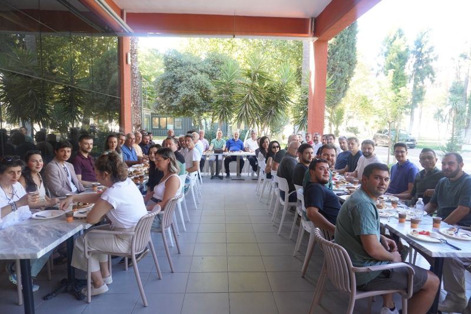
Ege TeknoparkEge Teknopark Topluluk Buluşması
Ege Teknopark ekosistemindeki girişimci ve paydaşlarla bir araya gelerek yeni iş birlikleri, teknoloji odaklı projeler ve ortak gelişim fırsatları üzerine sohbet ettik.
Elektrik, Otomasyon, Elektronik ve Mekanik alanlarında kapsamlı mühendislik hizmetleri ile işletmenizin güvenliğini, verimliliğini ve sürekliliğini güvence altına alıyoruz.
GES, trafo ve periyodik kontrol ihtiyacınızı önceden hesaplayın.
Teklif Araçlarını AçÇatı alanı, gündüz tüketim profili, statik gereksinimler ve bağlantı sürecini birlikte değerlendirerek öz tüketime odaklı bir GES yol haritası oluşturuyoruz.
Endüstriyel tesislerden ticari yapılara kadar farklı sektörlerde başarıyla tamamladığımız projelerden örnekler.


Projeniz hakkında görüşmek ister misiniz?
Bizimle İletişime GeçinSaha çalışmalarımız, Ar-Ge projelerimiz ve katıldığımız etkinliklerden öne çıkanlar.

Ege TeknoparkEge Teknopark ekosistemindeki girişimci ve paydaşlarla bir araya gelerek yeni iş birlikleri, teknoloji odaklı projeler ve ortak gelişim fırsatları üzerine sohbet ettik.
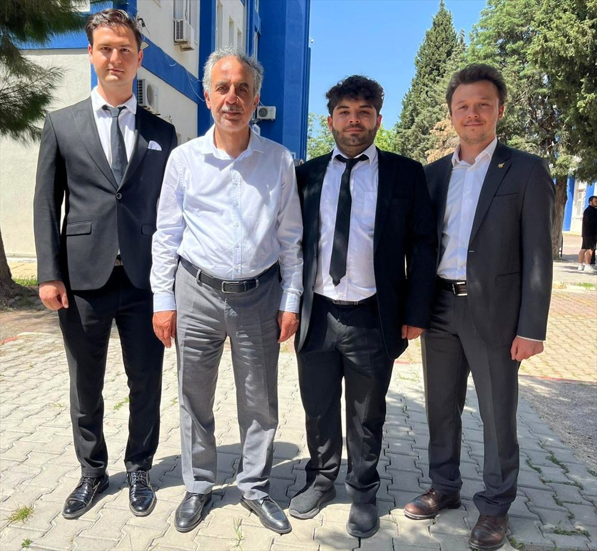
Ar-Ge & SavunmaEge Üniversitesi Rektörü ve hocamız Prof. Dr. Musa Alcı ile bir araya gelerek, tez projemiz olarak başlayan ve bugün Roketsan ile Havelsan iş birliğinde yürüttüğümüz Aktif EMI Filtre çalışmamızı paylaştık. Savunma sanayiinde elektromanyetik uyumluluk alanında katma değerli çözümler üretmeye devam ediyoruz.
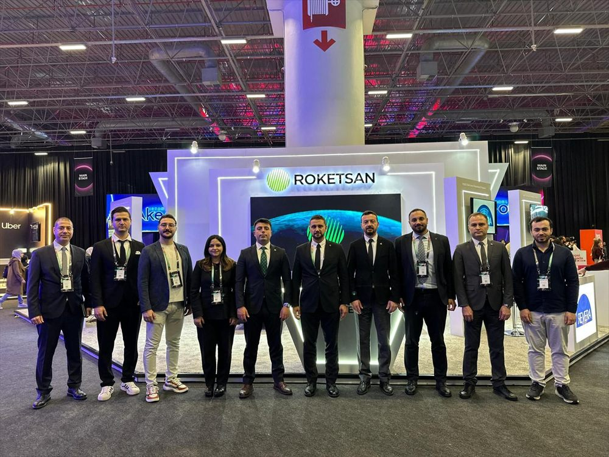
GirişimcilikTake Off İstanbul sürecinde bizleri standına davet eden ROKETSAN'a teşekkür ederiz. İki gün boyunca girişimimizi tanıtma, ürün vizyonumuzu aktarma ve yatırımcılarla nitelikli görüşmeler gerçekleştirme fırsatı bulduk. Yüksek katma değerli teknolojiler geliştirmeye devam ediyoruz.
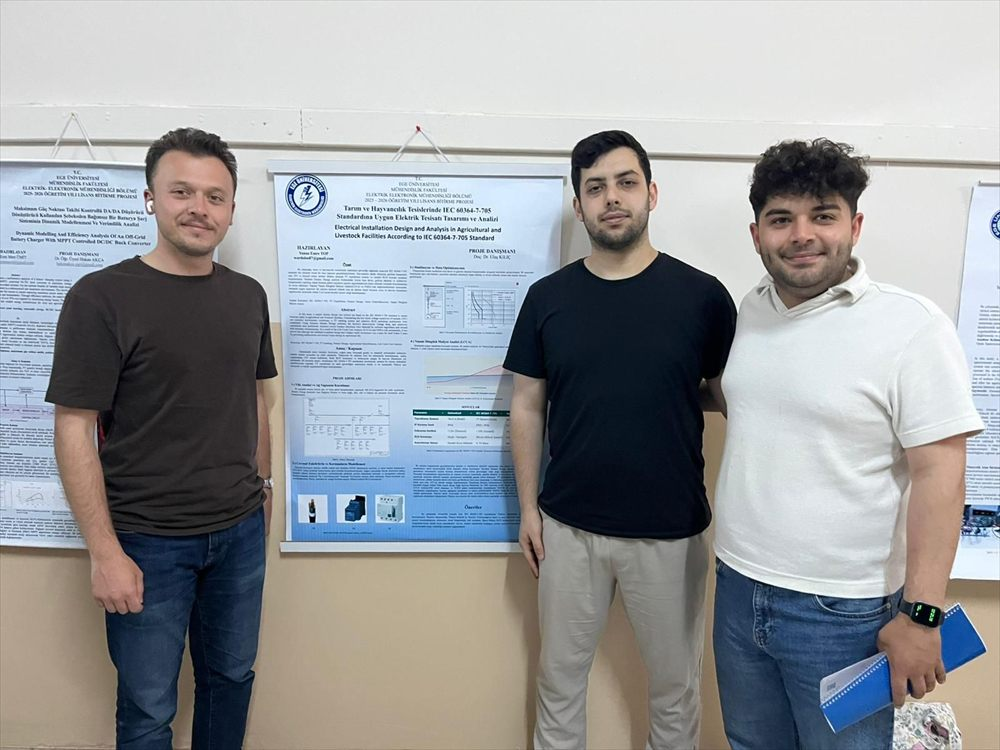
EtkinlikEge Üniversitesi Elektrik-Elektronik Mühendisliği Bölümü öğrencilerinin bitirme tezi sunumlarına katıldık. Genç mühendis adaylarının yenilikçi fikirlerini ve projelerini yakından inceleme fırsatı bulduk; üniversite-sanayi iş birliğine katkı sunmaya devam ediyoruz.
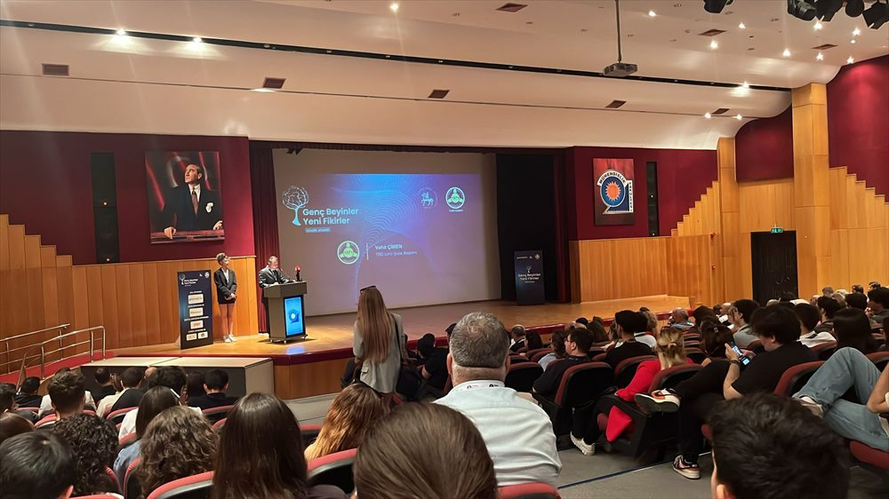
Etkinlik"Genç Beyinler Yeni Fikirler" etkinliğinde hakem olarak yer aldık. Gençlerin teknoloji odaklı projelerini değerlendirmek ve sektör tecrübemizle katkı sunmak bizim için değerliydi. Yenilikçi fikirleri ve genç mühendisleri desteklemeye devam edeceğiz.
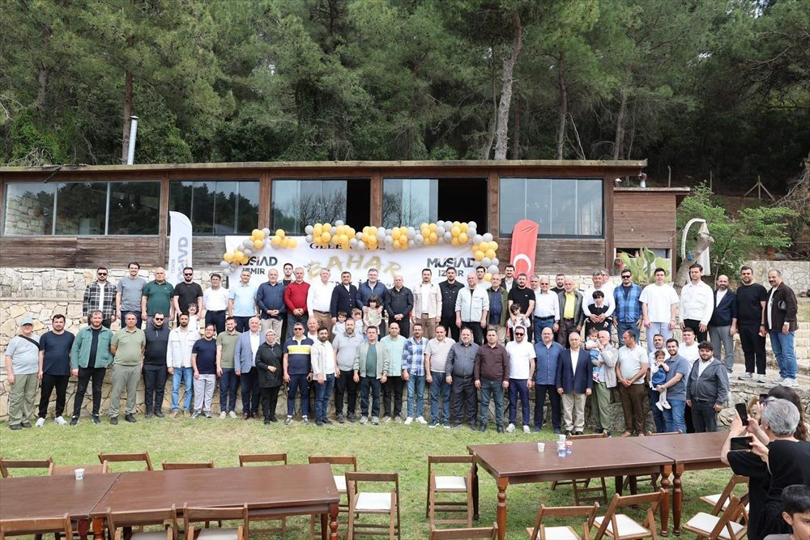
EtkinlikMÜSİAD'ın 36. kuruluş yıl dönümü kapsamında düzenlenen MÜSİAD İzmir Geleneksel Bahar ve Aile Şenliği'ne katıldık. Nazik davetleri için MÜSİAD İzmir Başkanı Sn. Gökhan Temur'a ve tüm MÜSİAD İzmir ailesine teşekkür eder, nice güçlü yıllar dileriz.
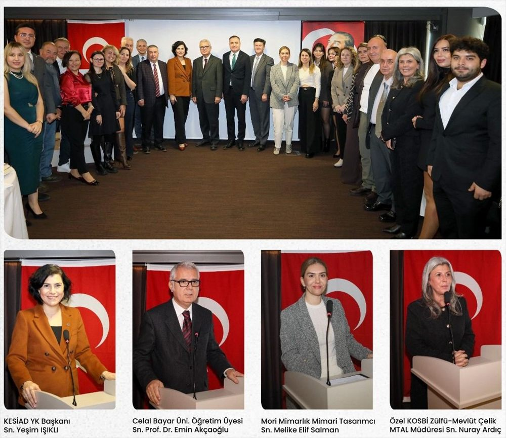
EtkinlikKESAİD Kahvaltısı'nda değerli iş insanları ve akademisyenlerle bir araya geldik. Nazik ev sahipliği için KESAİD YK Başkanı Sn. Yeşim Işıklı'ya teşekkür ederiz. Sektörün geleceğine dair fikir alışverişi yaptığımız, yeni iş birlikleri için güçlü bir zemin oluşturan verimli bir buluşma oldu.
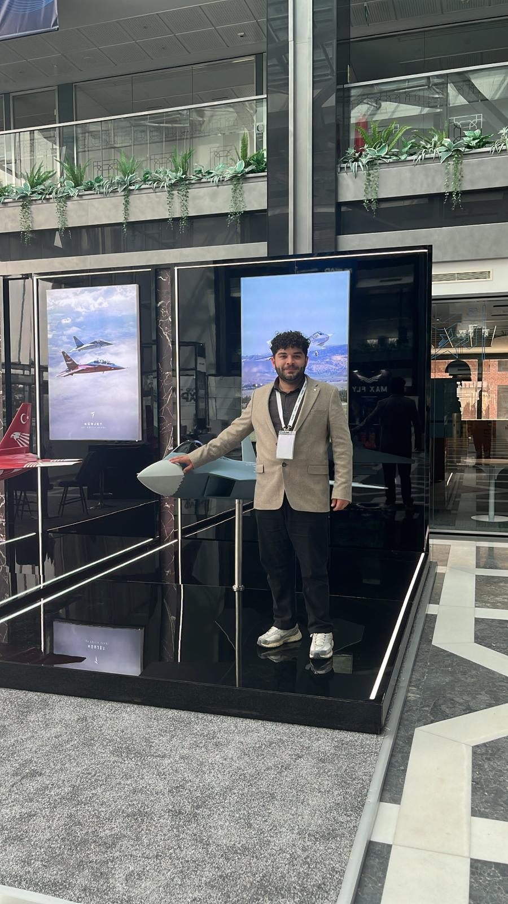
EtkinlikTUSAŞ Tedarikçi Günü'nde yerimizi aldık. Sektör paydaşlarıyla bir araya gelerek iş birliği fırsatlarını değerlendirdik ve yeni bağlantılar kurduk.
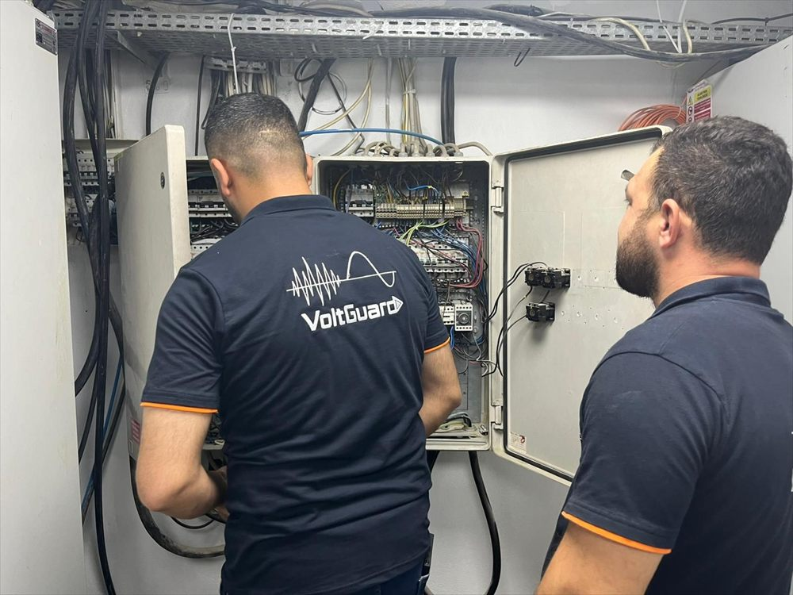
Saha ÇalışmasıGerçekleştirdiğimiz saha çalışmasında trafo kontrolü ve arıza tespiti süreçlerini tamamladık. Sistemin çalışma durumu değerlendirildi, risk oluşturabilecek noktalar belirlendi ve gerekli teknik analizler yapıldı. Enerji sürekliliği için sahada çözüm üretmeye devam ediyoruz.
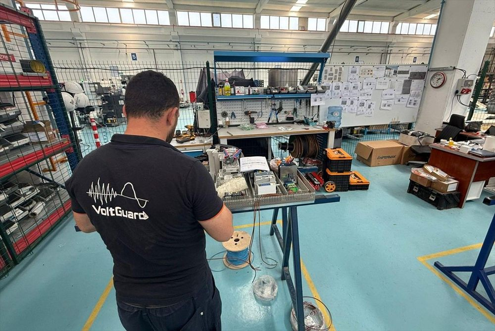
Saha ÇalışmasıTesisin ihtiyaçlarına uygun, düzenli ve güvenilir bir elektrik dağıtım yapısı kurduk. Ekipman yerleşimi, kablo güzergâhları, bağlantı kontrolleri ve devreye alma adımlarını titizlikle yürüttük. Amacımız enerji sürekliliğini destekleyen, uzun vadede güvenli bir altyapı sunmak.
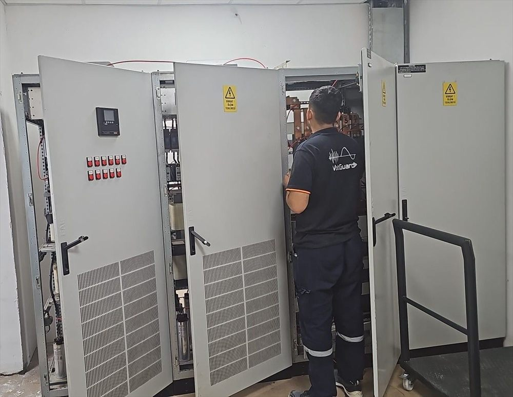
Saha ÇalışmasıGerçekleştirdiğimiz pano revize çalışmasıyla mevcut elektrik panosunu daha güvenli, düzenli ve verimli bir yapıya kavuşturduk. Pano içi düzenlemeler, bağlantı kontrolleri ve ekipman yerleşimleri titizlikle ele alınarak enerji altyapısının daha sağlıklı çalışmasına katkı sağlandı.
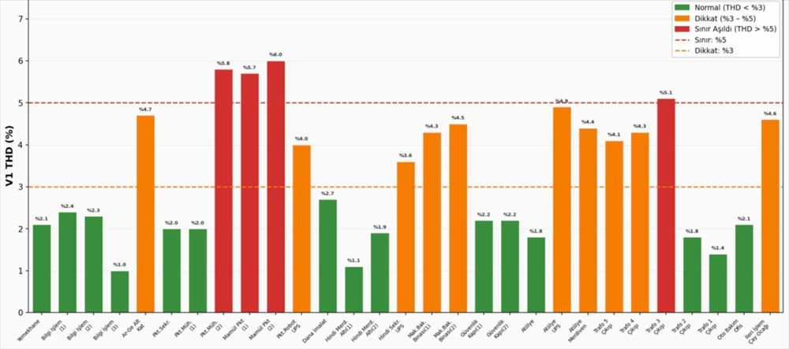
HizmetTesisinizin elektriksel ölçümleri, kalibreli cihazlar ve uzman ekibimizle profesyonel şekilde gerçekleştirilir. Enerji kalitesi ve güvenli işletme için periyodik ölçüm ve raporlama hizmeti sunuyoruz.
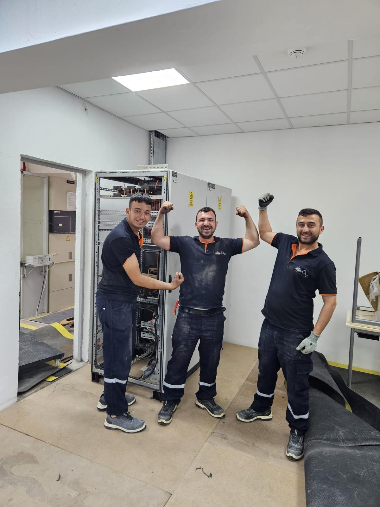
EkipBir pano kurulumu ve devreye alma çalışmasını tamamlayan saha ekibimiz. VoltGuard'da işin arkasında; sahada birlikte ter döken, disiplinli ve motivasyonu yüksek bir ekip var.
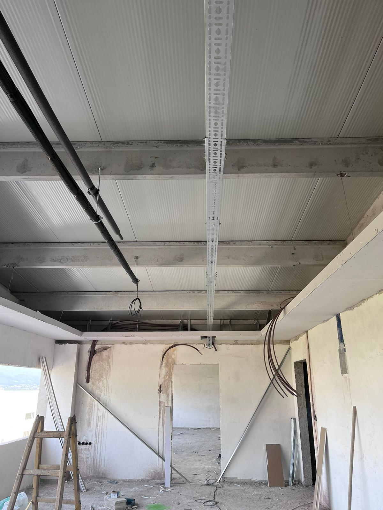
Anahtar Teslimİnşaat aşamasındaki bir yapıda kablo tavası ve tesisat altyapısını sıfırdan kurguluyoruz. Kaba inşaattan devreye almaya kadar tüm süreci tek ekiple, uçtan uca yönetiyoruz.
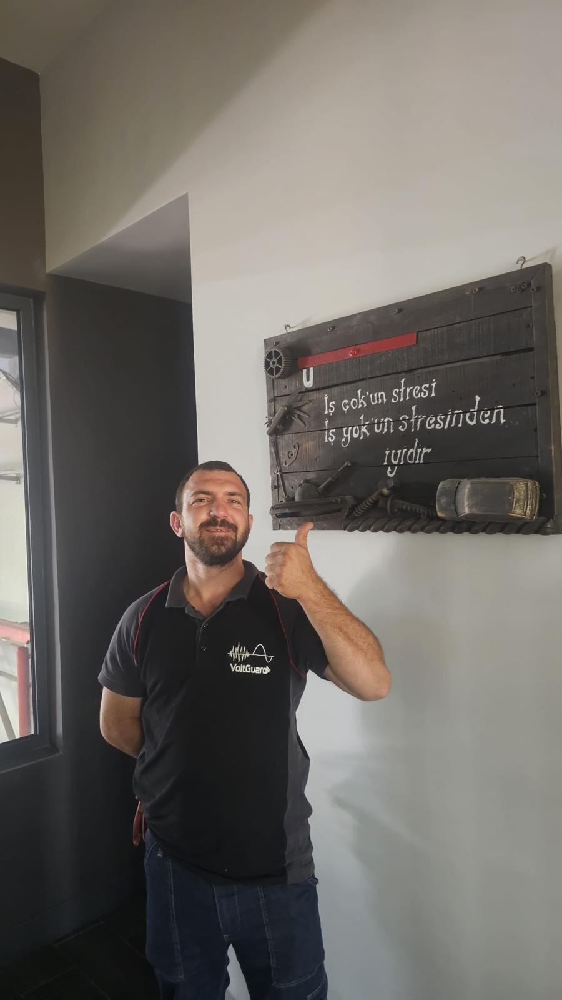
Kurumsal KültürSaha çalışmalarının yanında ekip motivasyonuna ve iyi bir çalışma ortamına da önem veriyoruz; işin kalitesi kadar bunu üreten ekibin ruh hali de bizim için önemli.
Geliştirdiğimiz aktif EMI filtre yaklaşımını canlandıran etkileşimli bir gösterim. Düğmeye basın; gürültülü sinyalin nasıl temiz bir sinüse dönüştüğünü canlı izleyin.
Filtre kapalıyken sinyalde harmonik bozulma ve yüksek THD görülür; filtre açıldığında dalga formu temiz bir sinüse döner, güç faktörü iyileşir.
VoltGuard olarak elektrik, otomasyon, elektronik ve mekanik alanlarında kapsamlı mühendislik hizmetleri sunuyoruz. Uzman kadromuz ile endüstriyel tesislerden ticari yapılara kadar geniş bir yelpazede güvenilir, sürdürülebilir ve yenilikçi teknolojik çözümler geliştiriyoruz.
Müşterilerimizin operasyonel süreçlerini optimize etmek, enerji verimliliğini artırmak ve üretim kesintilerini en aza indirmek için güncel teknolojileri ve mühendislik standartlarını titizlikle uyguluyoruz.

Elektrik tesisatından endüstriyel otomasyona, gömülü sistemlerden mekanik ve enerji verimliliği çözümlerine kadar beş ana alanda tam entegre mühendislik hizmetleri sunuyoruz.
SMM hizmetlerinden trafo işletme sorumluluğuna, enerji kalitesi analizinden topraklama sistemlerine kadar tam kapsamlı elektrik mühendisliği çözümleri.
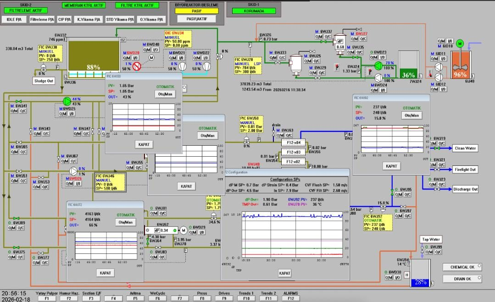
Mikrodenetleyici tabanlı özel çözümlerden PCB tasarımına, IoT uygulamalarından endüstriyel veri toplama sistemlerine kadar geniş kapsamlı elektronik mühendisliği.
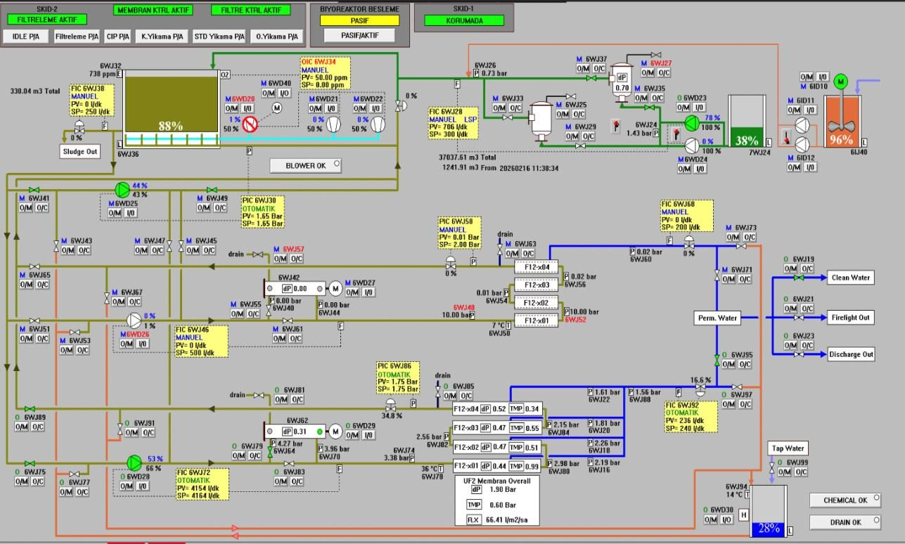
PLC yazılım geliştirmeden SCADA kurulumuna, motor kontrol sistemlerinden uzaktan izleme çözümlerine kadar tam kapsamlı endüstriyel otomasyon hizmetleri.
Endüstriyel makine tasarımından üretim hattı kurulumuna, hidrolik sistemlerden mekanik modernizasyona kadar kapsamlı mekanik mühendislik hizmetleri.
Yenilenebilir enerji yatırımlarından geri kazanım/arıtma sistemlerine, enerji üretim-iletim-dağıtım altyapısından verimlilik projelerine kadar sürdürülebilir enerji çözümleri.
Elektrik, otomasyon, elektronik ve mekanik alanlarındaki hizmetlerimizi, mühendislik yaklaşımımızı ve referans çalışmalarımızı bir arada bulabileceğiniz kurumsal kataloğumuzu görüntüleyebilir veya indirebilirsiniz.
Her projede sistematik ve şeffaf bir süreç izleyerek en yüksek kaliteyi garanti ediyoruz.
Tesisinizi yerinde inceliyor, teknik ihtiyaçlarınızı detaylı olarak analiz ediyoruz.
Size özel mühendislik çözümü tasarlıyor, proje planını ve zaman çizelgesini oluşturuyoruz.
Uzman ekibimizle projeyi hayata geçiriyor, tüm kurulum ve devreye alma işlemlerini tamamlıyoruz.
Proje sonrası 7/24 teknik destek ve periyodik bakım hizmetleri ile yanınızda olmaya devam ediyoruz.
Müşterilerimize sunduğumuz değerler ve taahhütlerimiz ile sektörde güvenilir bir çözüm ortağı olmayı önceliğimiz olarak görüyoruz.
Alanında uzman, lisanslı mühendis ve teknisyenlerden oluşan deneyimli ekibimiz ile kesintisiz hizmet veriyoruz.
Tüm çalışmalarımızda ulusal ve uluslararası güvenlik standartlarını titizlikle uyguluyoruz.
Proje planlaması ve zaman yönetiminde disiplinli yaklaşımımızla işlerinizi belirlenen sürede teslim ediyoruz.
Arıza ve acil durumlar için haftanın 7 günü 24 saat ulaşılabilir teknik destek hizmetimiz ile yanınızdayız.
Tasarım, mühendislik, kurulum ve devreye alma süreçlerinin tamamını tek çatı altında yönetiyoruz.
Enerji verimliliği ve operasyonel optimizasyon çözümlerimiz ile müşterilerimizin maliyetlerini düşürüyoruz.
Ege Üniversitesi ve Türk Havacılık ve Uzay Sanayii (TUSAŞ) iş birliğinde yürütülen Aktif EMI Filtre projesine ait onur ve katılım belgelerimiz.
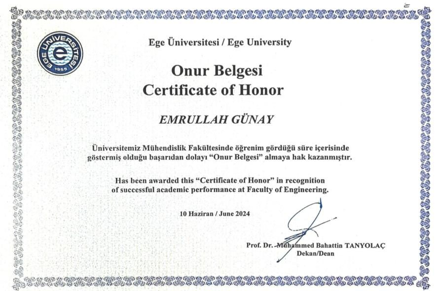
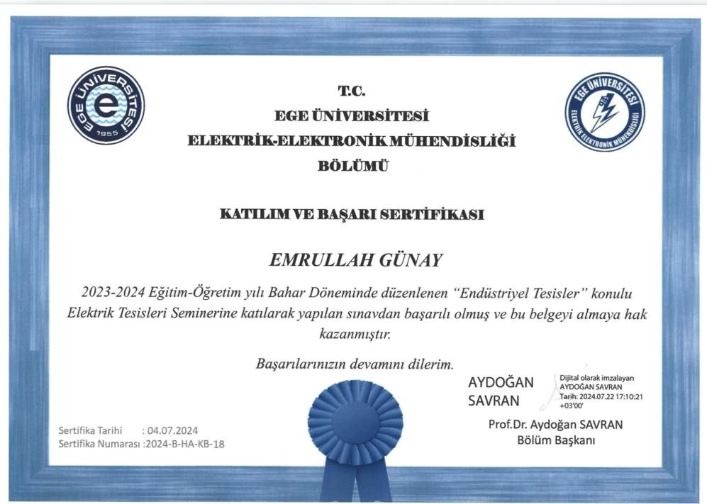
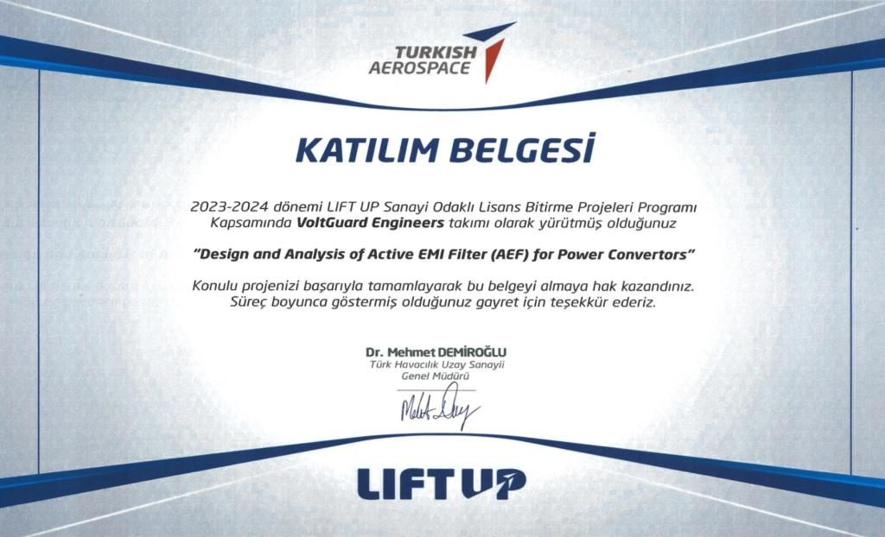
VoltGuard, yalnızca sahadaki elektriksel güvenliği değil, veri gizliliği, süreç izlenebilirliği ve iş sürekliliğini de kurumsal standardın bir parçası olarak yönetir.
Kritik sistemlerde rol bazlı erişim prensibiyle izinsiz müdahale risklerini minimize ediyoruz.
Proje verileri ve konfigürasyon kayıtları, kontrollü yedekleme stratejileriyle korunur.
Müşteri iletişim verileri yalnızca onaylı amaçlarla işlenir ve üçüncü taraflarla paylaşılmaz.
Kritik operasyonlarda hızlı aksiyon için izleme, alarm ve teknik geri dönüş kanalları aktif tutulur.
VoltGuard hizmetleri hakkında en çok merak edilenler.
VoltGuard; elektrik (SMM, trafo işletme sorumluluğu, enerji kalitesi ve harmonik analiz, pano kurulumu, topraklama ve yıldırımdan korunma), otomasyon (PLC/SCADA), elektronik & gömülü sistemler ve mekanik sistemler alanlarında anahtar teslim mühendislik hizmetleri sunar.
Merkezimiz İzmir Bornova'da, Ege Teknopark'tadır. İzmir ve çevresine saha hizmeti veriyor, proje bazlı olarak Türkiye genelinde çalışıyoruz.
Evet. Lisanslı mühendislerimizle SMM hizmetleri ve trafo işletme sorumluluğu sağlıyoruz.
Evet. Trafo bakımı, periyodik ölçüm, enerji kalitesi analizi ve raporlama hizmetleri sunuyoruz.
Hayır. Teknik ihtiyacınızı değerlendirip ücretsiz danışmanlık ve teklif desteği sağlıyoruz.
7/24 teknik destek hattımızla acil durumlarda hızlı dönüş yapıyoruz.
Ege Üniversitesi'nde tez projesi olarak başlayan, Roketsan ve Havelsan iş birliğinde yürütülen, savunma sanayiine yönelik elektromanyetik uyumluluk (EMC) Ar-Ge çalışmamızdır.
0 545 434 67 35 numarasından, info@voltguard.com.tr e-posta adresinden veya sitedeki iletişim formundan bize ulaşabilirsiniz.
Proje talepleriniz, teknik danışmanlık ve destek için aşağıdaki kanallardan bize ulaşabilirsiniz.